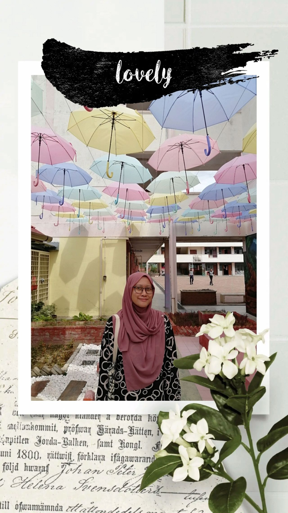
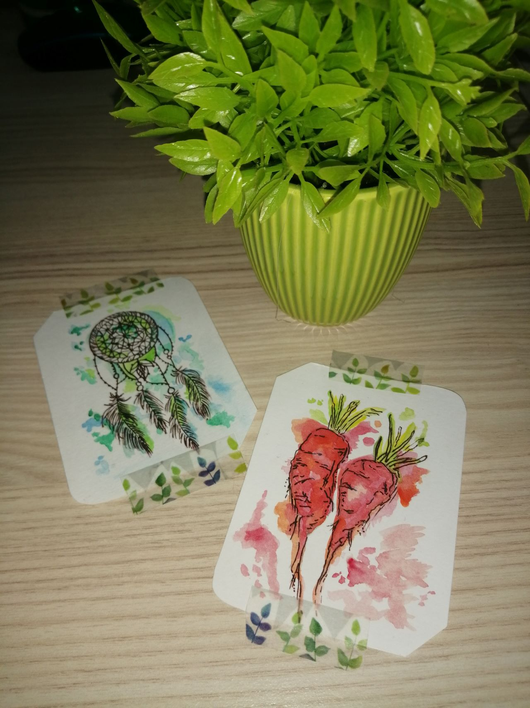

I was born on 15th March 2001 at Sungai Buloh Hospital located in Sungai Buloh, Selangor. As the only daughter in the family, I was grew up with so much love and affection from my family. Currently living in Kota Damansara, Petaling Jaya, Selangor and aged 21, I was really grateful for who I am. Surrounded with supportive family members and friends, I can tell that, they are the one who made me becomes someone as now. There's nothing valuable in this world rather than the love and supports received from people around you. Preferably called as Ayu, with just three words, I am sure that my name is easier to be remembered and of course, to pronounce it.
I am the third one out of four siblings. Our gap between each other is around 4 to 7 years. Interestingly, two of us, my brothers were born in Kelantan since our parents are both from Kelantan while the another two, me and my youngest brother were born in Selangor. However, we still can understand and communicate like pure Kelantanese due to our daily usage in conversation at home. Talking about Kelantan, it somehow reminds me of my all time favourite food which is Nasi Kerabu and Nasi Dagang. Both of the Malaysian cuisine are such the most delicious food in Kelantan according to my preference. Nasi Kerabu, especially is a visually appealing due to its blue colour resulted from natural colour of butterfly pea flower or usually known as "bunga telang".


Some favourite self-artworks
For interest, I have passion in something related to art. It can be painting, sketching and even DIY. Recently, during my free time, I love to do digital arts using my drawing tablet and of course with some software such as Krita and Adobe Illustrator. It is kind of therapeutic and fun as it helps me to release my stress over assignments. Since there is no restriction, wrong or right in art, I can freely create or design anything I love such as flowers and landscape. Most importantly, I can play with various colours.
Aside from art, I also like to watch Korean dramas. It can be any drama but most of the time, I prefer romantic comedy, medical and thriller genre. Basically, Kdramas have its own uniqueness in terms of the storyline, cinematography and even script. Plus, I love and amaze with the effort of production crew, actors and actress in making thorough research in order to make the character seem more real. For me, Kdramas are not mere entertainment, it actually contain lots of value to be gained for life.
Summary of myself in a video
(P/s: This video was uploaded in July 2021 so do expect some changes on my interest)